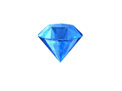

Tiny notes about PRs
But mainly the love for the diamond
First of all, and this should be brainless and self-evident, but gonna mention this anyway. Pull requests are vital part of keeping the codebase working and sane when working with a team of developers. Not the only way, but often a very good way.
What got me to think about this very basic thing this morning was to notice how happy this sight made me:
It makes me happy to see it on my PR, but it makes me happy to see it on someone else’s PR too!
Instead of just putting a label “approved” or “LGTM”, this gives the feeling of respect, the idea that “this code is diamond”. I don’t care how stupid this might sound, but I love it! ;D
However, this was not the only thing I wanted to write about. I’ve seen a lot of different ways of working with PR:s, and imo some are terrible and some are good.
In one project we had a mandatory two people review, and a PR could not be merged without two people accepting it. For tiny changes like translations or one-liner bug fixes that was insane and made things stupid slow. With having admin rights one could, and did, just pass the requirement, but that even underlined the stupidity of the process. This usually lead into one person to go thru the code, and then just someone to rubberstamp it.
The pull request process I like the most, is responsibility and freedom. Kinda like in life in general!
What I mean with that, is that I am allowed to just merge my PRs without any acceptance from anyone. I’m also trusted in not doing that, unless it’s needed and I know what I’m doing. I love it when people take time to read thru other’s code, and find ways to make it better, readable, and usable. It takes time. But it makes the codebase so much better, and it also increases knowledge of the code, both for the reviewer(s) and the coder.